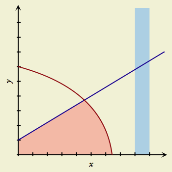

Drawing Fills with the Fill Tool

The Fill tool is how you shade or highlight areas of the canvas. To get into Fill mode, just click the Fill button in the toolbar, or hold down the F key (the “hot key” for this tool). Fill mode lasts for as long as you hold down the key. As you use GraphSketcher more and more, you’ll probably find that the hot keys are the quickest way to switch between tools.
To create a fill:
- While in Fill mode, click once to define each corner of the fill. You need at least three corners, of course, but beyond that you can create as many as you need.
If you draw a corner on top of an existing line or point, the corner and the object snap together. So, subsequently moving the line or point will bring the corner along for the ride, unless you detach them.
If two consecutive corners of a fill are snapped to the same line, the fill conforms to the shape of the line.
Once you’ve created a fill, you can change it with the Modify tool.